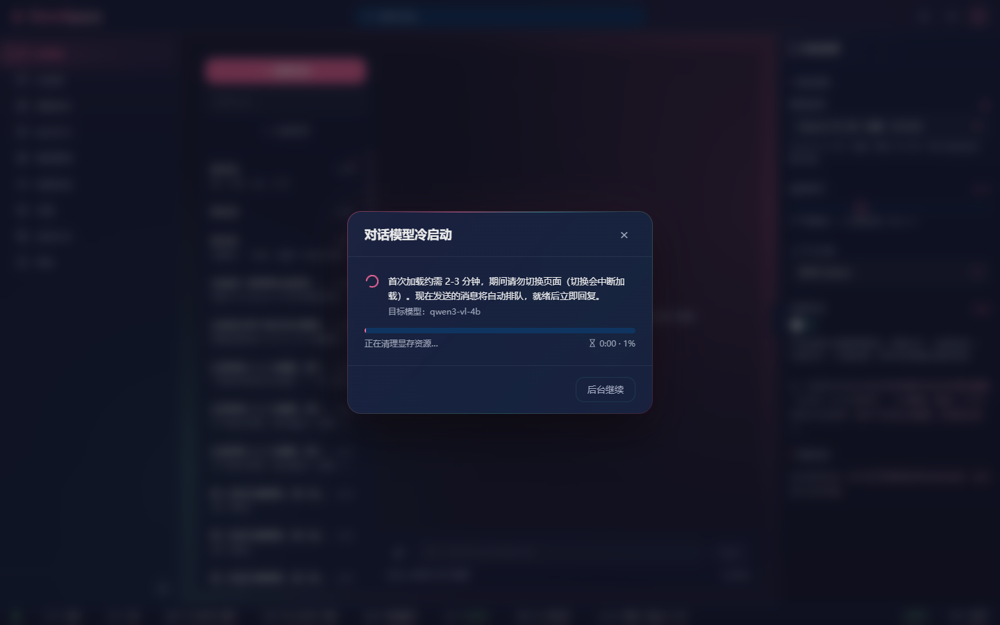
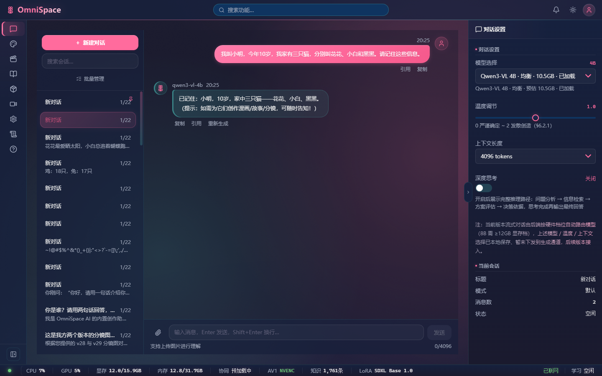
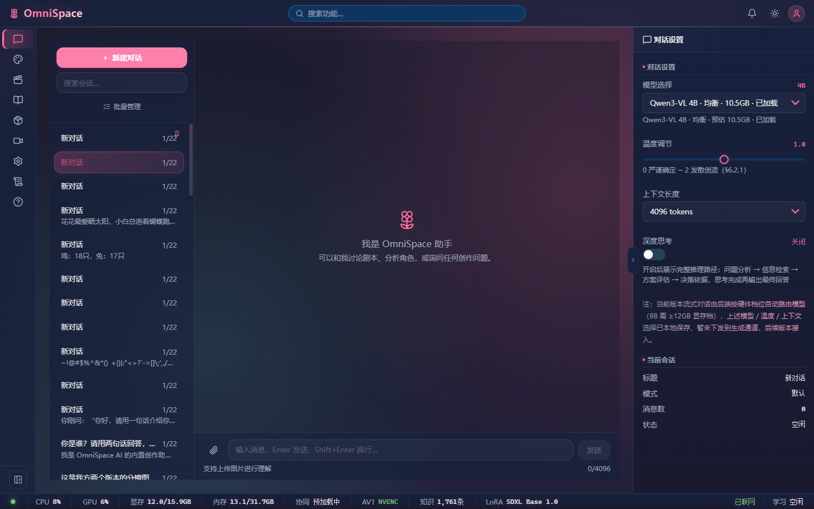
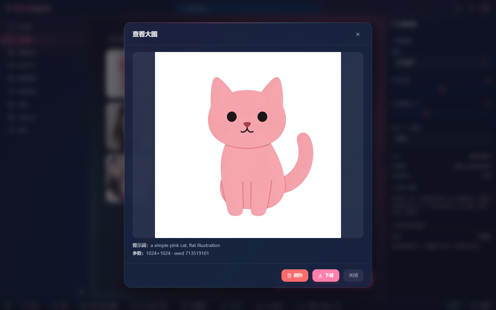
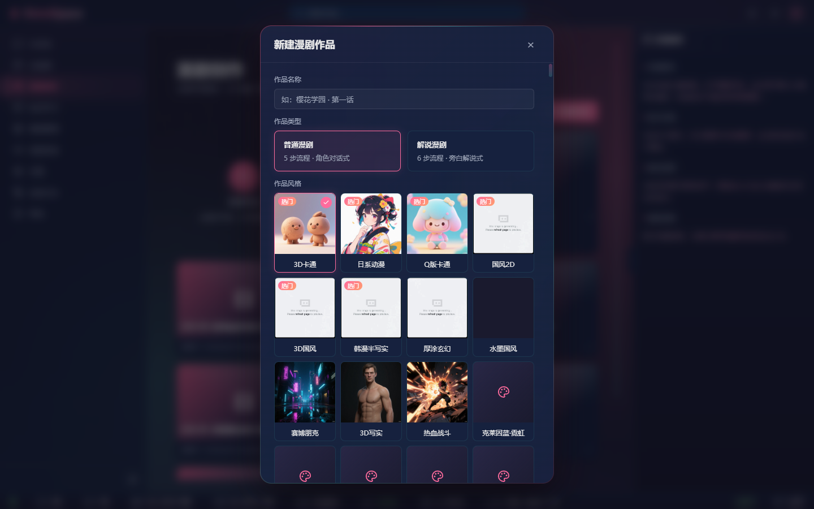
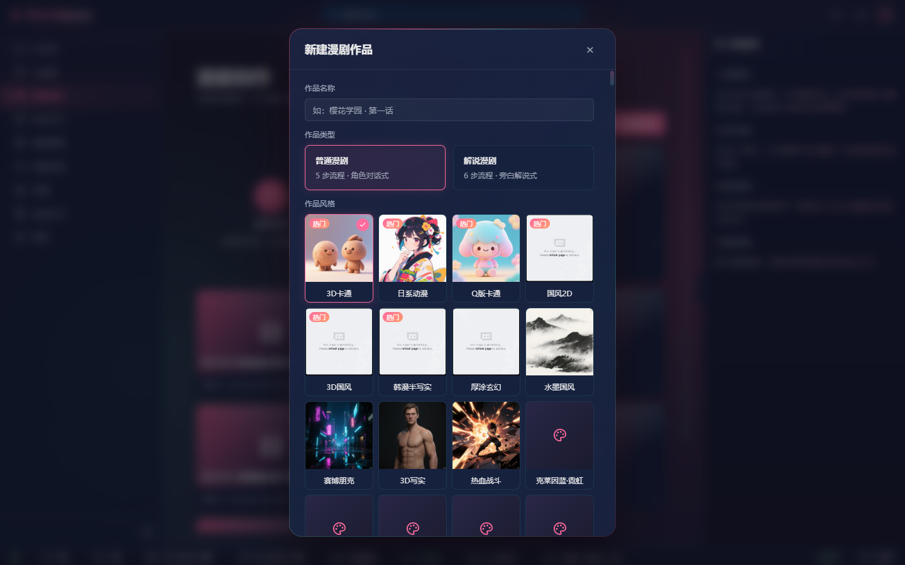
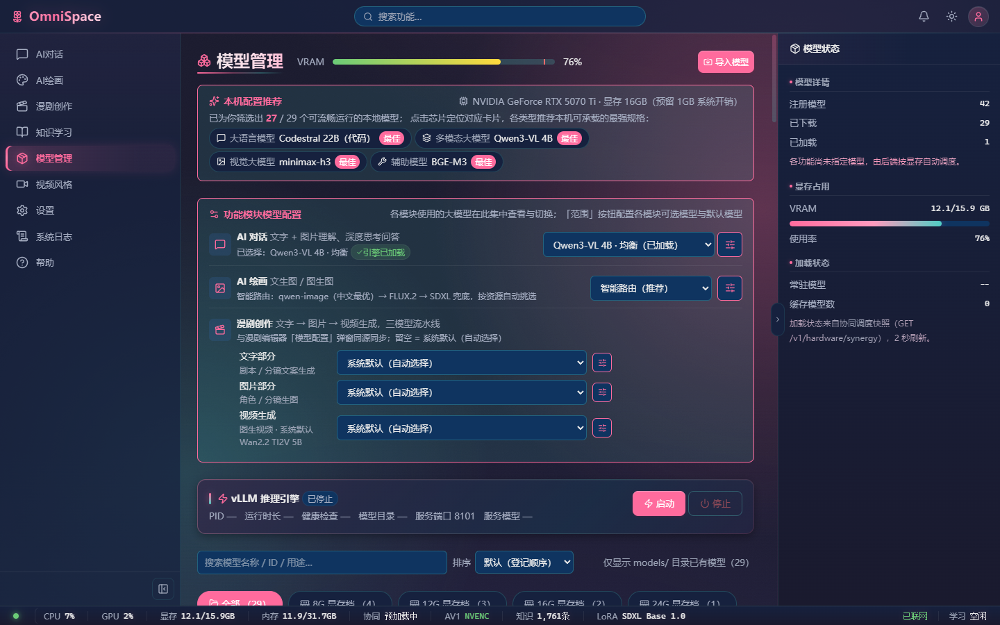
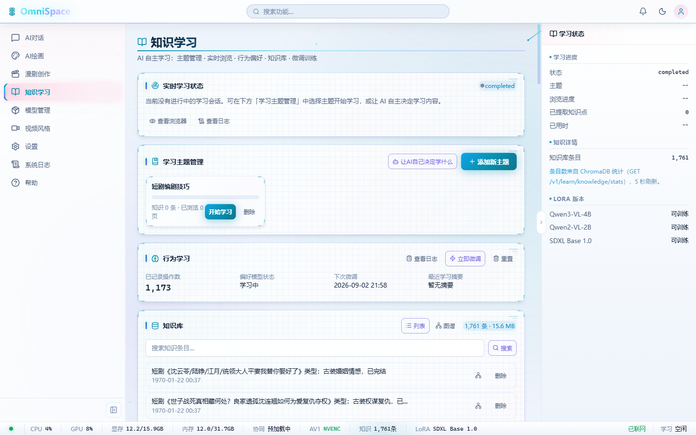
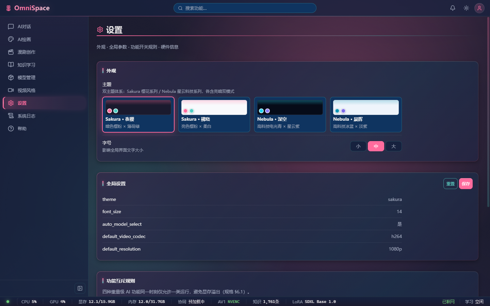

1. 测试方法论与范围
本轮测试在上一轮粗粒度 UAT（31 项问题）的基础上，聚焦交互细节、参数边界、错误路径与数据一致性，采用仿人操作流模拟真实用户的探索行为。
1.1 测试策略
- 仿人操作流：每个角色按真实用户的思考路径操作（犹豫→尝试→出错→调整→确认），非机械性功能遍历
- 边界场景优先：重点测试空输入、超长输入、特殊字符、极值参数、快速连点等非正常使用路径
- 状态校验：每个操作后检查界面状态与用户预期是否一致（按钮禁用态、加载指示、数字准确性）
- 刷新持久化验证：设置修改、会话切换后刷新页面，检查状态是否正确保留
- 全量 console 监听：全程捕获 JS 错误、网络失败、资源加载异常
1.2 角色与覆盖范围
| 角色 | 画像 | 核心测试维度 | 截图数 |
|---|
| A · 林晓 | 新手用户 | 首次体验、状态栏交互、导航压力测试、空状态边界、主题切换 | 26 |
| B · 阿哲 | 对话用户 | 多轮上下文、配置面板边界、消息操作、长文本/特殊字符、会话管理 | 14 |
| C · 小满 | 绘画创作者 | 参数极值、比例切换、空提示词、生成反馈、历史记录、Tab 切换压力 | 18 |
| D · 老周 | 漫剧创作者 | 新建作品边界、多作品切换、步骤导航压力、资产分类、表格交互 | 9+ |
| E · 雯姐 | 技术型用户 | 模型分组搜索、日志过滤、四主题验证、知识库时间戳、功能互斥 | 26 |
1.3 工具与取证
- Playwright 1.62 有头 Chromium：逐角色独立会话，slowMo 200-350ms 模拟人工操作节奏
- separateweb-capture：6 个核心页面全页 DOM 快照 + 可访问性树 + UI 裁剪清单
- console 错误全程监听：5 角色合计 0 条 JS 错误
- 网络失败请求监听：5 角色合计 0 条失败请求
2. 问题总览（28 项新增）
本轮细粒度测试共发现 28 项新增问题（不含第一轮已记录的 31 项），其中 P0 致命 3 项、P1 严重 8 项、P2 一般 12 项、P3 轻微 5 项。
图 1 · 问题严重度分布（按发现角色堆叠）
| 编号 | 严重度 | 模块 | 问题描述 | 发现角色 |
|---|
| F-P0-1 | P0 | AI对话 | 首次打开对话页直接弹出「冷启动」模态窗，无任何引导就被扔进 2-3 分钟等待——新用户第一印象极差 | A |
| F-P0-2 | P0 | 知识库 | 1761 条知识条目时间戳全部显示 1970-01-22（epoch 偏移 bug），时序管理完全失效 | E |
| F-P0-3 | P0 | AI绘画 | 空提示词时「文字生成图片」按钮不禁用，可直接点击提交——可能触发后端异常或生成无意义结果 | C |
| F-P1-1 | P1 | AI对话 | 温度滑块旁标注「(6:2:1)」——规格文档编号直接暴露给终端用户，无任何意义 | B |
| F-P1-2 | P1 | AI对话 | 特殊字符长串（~!@#$%...）被直接作为会话标题显示（如「~!@#$%^&*()_+{}|...」），视觉混乱 | B |
| F-P1-3 | P1 | AI对话 | 对话设置面板声明「模型/温度/上下文选择已本地保存，暂未下发到生成通道」——配置呈现可用但实际无效 | B |
| F-P1-4 | P1 | AI绘画 | 数字输入框（步数/CFG 等）无上限限制，可输入 9999 等极端值，可能导致后端异常 | C |
| F-P1-5 | P1 | AI绘画 | 比例选择 7 种（1:1/3:4/4:3/3:2/2:3/9:16/16:9），但参数面板尺寸仍显示固定值，两处口径不一致 | C |
| F-P1-6 | P1 | AI绘画 | 生成过程零反馈：按钮无加载态、无进度条、无阶段文案、「生成状态」不更新 | C |
| F-P1-7 | P1 | 漫剧 | 新建作品弹窗名称为空时「创建」按钮不禁用——可创建无名作品 | D |
| F-P1-8 | P1 | 全局 | 功能互斥机制无用户可见提示：对话占用中切到绘画点生成，无任何「功能冲突」反馈 | E |
| F-P2-1 | P2 | AI对话 | 新建对话按钮无防抖，快速连点会创建多个空会话 | A |
| F-P2-2 | P2 | AI对话 | 会话列表全部默认名为「新对话」，无自动摘要或重命名入口，多会话后完全无法区分 | B |
| F-P2-3 | P2 | AI对话 | 右键点击会话无上下文菜单（删除/重命名/置顶） | A |
| F-P2-4 | P2 | AI对话 | 底部状态栏 10+ 项指标同排展示，点击无任何 tooltip 或详情弹窗 | A |
| F-P2-5 | P2 | AI绘画 | 比例按钮 7 个但无当前选中高亮（或选中态不明显），用户无法确认当前比例 | C |
| F-P2-6 | P2 | AI绘画 | 快速切换 Tab（文生图/图生图/局部重绘等）6 次后界面无报错但状态可能混乱 | C |
| F-P2-7 | P2 | AI绘画 | 历史图片点击后无明显详情视图/放大预览，交互反馈弱 | C |
| F-P2-8 | P2 | 漫剧 | 风格网格末行 4 个「克莱因蓝·霓虹」占位仅有图标，无「即将上线」或「敬请期待」说明 | D |
| F-P2-9 | P2 | 漫剧 | 作品类型「普通漫剧 / 解说漫剧」选项缺少详细说明，新用户不知道区别 | D |
| F-P2-10 | P2 | 模型管理 | 模型搜索无结果时（如搜「不存在的模型abc」）为空状态——无「未找到匹配模型」提示 | E |
| F-P2-11 | P2 | 系统日志 | 日志级别过滤按钮仅 2 个（非完整 ERROR/WARN/INFO/DEBUG 四级） | E |
| F-P2-12 | P2 | 全局 | 设置页「全局设置」直接展示英文键名（theme/font_size/auto_model_select），无中文标签 | E |
| F-P3-1 | P3 | AI对话 | 模型 ID「qwen3-vl-4b」直接作为消息署名，宜用产品化名称 | B |
| F-P3-2 | P3 | AI绘画 | 采样器下拉选项数量较多但无搜索/快速定位 | C |
| F-P3-3 | P3 | 漫剧 | 新建作品弹窗中「热门」角标覆盖在风格缩略图左上角，影响视觉判断 | D |
| F-P3-4 | P3 | 设置 | 四主题名称过长（如「Sakura · 夜樱暗色樱粉 × 薄荷绿」），按钮内文字拥挤 | E |
| F-P3-5 | P3 | 帮助 | 帮助页 15 张卡片点击无跳转/展开反应，纯静态展示 | E |
3. 角色 A · 新手「林晓」细粒度发现
3.1 首次体验：冷启动弹窗是第一个拦路虎
打开对话页的第一件事不是看到欢迎引导，而是弹出「对话模型冷启动」模态窗，告知用户需要等 2-3 分钟。对于完全不了解产品的新手来说：
- 不知道「冷启动」是什么意思
- 不知道「qwen3-vl-4b」是什么模型、为什么要加载
- 没有「这是什么软件」的最基本介绍
- 「后台继续」按钮可点但点了之后也不知道该干嘛

证据 · 首次打开：没有欢迎引导，直接进入 2-3 分钟的模型加载等待。新用户第一印象就是「这软件好复杂」（F-P0-1）
3.2 状态栏：信息密度过高但不可交互
底部状态栏一排展示 10+ 项指标（CPU/GPU/显存/内存/协同/AV1/知识/LoRA/联网/学习），信息密度极高，但：
- 点击任意图标都没有 tooltip 或详情弹窗（F-P2-4）——新手不知道「AV1」「协同」「LoRA」是什么意思
- 状态值的颜色/数值含义缺乏图例（如「显存 12.8/15.9GB」是高还是低？）
- 「已联网」「学习 空闲」这类状态对普通用户属于信息噪音
3.3 导航与主题切换：流畅但无引导
9 个导航项全部可正常跳转，快速连点也没有崩溃——前端工程质量扎实。但新手的困惑是：
- 没有任何「新手引导」或「功能介绍」来帮助理解 9 个模块分别是什么
- 设置页 4 个主题切换流畅（Sakura 夜樱/拂晓、Nebula 深空/晨辉），但主题命名过长（完整名 15+ 字），按钮内文字拥挤（F-P3-4）
- 刷新页面后主题设置能保留——这一点做得很好
3.4 空状态边界测试结果
| 场景 | 实际表现 | 评估 |
|---|
| 空输入按 Enter | 无反应（输入框为空时 Enter 不触发发送） | 正常 |
| 输入空格后发送 | 会创建会话并发送（空格被当有效输入） | 需优化应 trim 后判断空内容 |
| 特殊字符长串发送 | 发送成功，特殊字符直接作为会话标题 | 需修复F-P1-2 |
| 连续点击新建对话 3 次 | 创建多个空会话（同名「新对话」） | 需优化F-P2-1 防抖 |
| 右键点击会话 | 无任何反应（无右键菜单） | 缺失F-P2-3 |
4. 角色 B · 对话「阿哲」细粒度发现
4.1 上下文记忆：准确可靠
三轮对话测试验证了上下文记忆能力：
- 第 1 轮：告知「我叫小明，10 岁，三只猫叫花花/小白/黑黑」——AI 正确确认已记住
- 第 2 轮：追问「我叫什么？几只猫？叫什么？」——AI 正确回答「小明、三只、花花/小白/黑黑」
- 第 3 轮：以三只猫为主角写小故事——AI 正确使用三个名字编故事

证据 · 多轮上下文：第二轮追问时 AI 准确复述了第一轮设置的事实（小明、10 岁、三只猫的名字），上下文记忆能力合格
4.2 配置面板：看起来能用，实际不生效
右侧「对话设置」面板提供了丰富的配置项，但面板底部小字承认「暂未下发到生成通道」：
- 模型选择：下拉可展开，但切换后仅本地保存，不影响实际生成（F-P1-3）
- 温度滑块：可拖动 0~2 范围，但旁边标注「(6:2:1)」规格编号外露（F-P1-1）
- 上下文长度：4096 tokens 下拉可选，但同样不生效
- 深度思考开关：可点击切换，但不接入生成链路
体验设计问题：呈现「可操作」状态但实际不生效，比直接「禁用+标注暂不可用」更伤害用户信任。用户调了半天温度、切了模型，发现回复没变——会认为产品 bug 多、不可靠。
4.3 会话管理：同名地狱
会话列表存在一个严重的可用性问题：所有新会话默认名为「新对话」，且不自动生成摘要。使用几天后：
- 列表里一排「新对话 1/22」「新对话 1/22」……完全无法区分（F-P2-2）
- 没有重命名入口（至少未在明显位置发现）
- 没有会话搜索框（仅顶部全局搜索）
- 右键无操作菜单（删除/置顶/重命名）（F-P2-3）

证据 · 会话列表：多个「新对话」同名排列，消息数显示 1/22（22 是系统上限？），语义不清晰
4.4 输入边界测试
| 测试项 | 输入 | 表现 | 评估 |
|---|
| 超长文本 | 200 句 × 8 字 ≈ 1600 字 | 输入框显示 0/4096 计数，可正常输入 | 正常 |
| 纯数字 | 1234567890 | 可正常发送，AI 回复询问需求 | 正常 |
| Emoji | 你好 😊 今天天气怎么样？🌞🌧️ | 可正常发送，AI 正确理解语义 | 正常 |
| 特殊字符 | ~!@#$%^&*()_+{}|:"<>? 重复 10 遍 | 发送成功，但特殊字符直接当会话标题 | 需修复F-P1-2 |
5. 角色 C · 绘画「小满」细粒度发现
5.1 参数面板：丰富但有隐患
绘画参数面板功能完整（7 种比例 + 4 个滑块 + 采样器 + CFG/种子输入 + 负面提示词），对有经验的用户友好。但细粒度测试发现几个隐患：
P0F-P0-3空提示词时生成按钮不禁用
清空提示词后，「文字生成图片」按钮仍然是可点击状态（非 disabled）。用户可能不小心误触空提交，或恶意提交空提示词导致后端异常。应该在前端做非空校验并禁用按钮。
P1F-P1-4数字输入框无上限限制
步数和 CFG 的数字输入框可以输入 9999 等任意大的数字，没有最大值限制。虽然后端可能会截断，但前端应该给出合理范围限制和输入校验，防止用户误输入极端值后等待失败。

证据 · 参数面板：参数丰富度合格。注意右侧比例选择与面板尺寸是否一致（F-P1-5）、数字输入框是否有上下限（F-P1-4）
5.2 生成流程：零反馈黑箱
点击「文字生成图片」后：
- 按钮文本不变（还是「文字生成图片」）
- 按钮不禁用（可以重复点击）
- 界面上没有任何进度条、百分比、阶段文案
- 「生成状态」字段不更新（仍显示空闲）
20 秒后界面仍然没有任何变化——用户完全不知道生成任务是否已经提交、正在排队、还是出错了。
证据 · 点击生成后：按钮无加载态、无进度指示、「生成状态」不更新——典型的零反馈黑箱体验（F-P1-6）
5.3 Tab 与模式切换
- Tab 数量达 12 个（含文生图/图生图/局部重绘/放大等），切换流畅
- 快速连点切换 6 次后无崩溃无报错——前端稳定性好
- 但切换 Tab 时参数是否保留/重置，缺乏明确提示（F-P2-6）
5.4 历史记录
- 历史图片以网格展示，点击有反应（但反馈不明显，无放大预览）（F-P2-7）
- 页面共 9 张图片（含历史生成记录）
- 图片操作按钮仅 2 种（下载/删除？）——缺乏复用提示词、收藏等实用功能
6. 角色 D · 漫剧「老周」细粒度发现
6.1 新建作品：信息架构清晰但细节待补
新建作品弹窗三段式设计（作品名称 → 作品类型 → 作品风格）信息架构清晰，12 种风格选择丰富。细粒度发现：
P1F-P1-7作品名称为空时创建按钮不禁用
清空作品名称后「创建」按钮仍然可点击——可能创建无名作品。虽然有 placeholder 提示「如：樱花学园·第一话」，但没有表单校验。

证据 · 新建作品弹窗：作品名称、作品类型、作品风格三段式结构清晰。注意末行 4 个「克莱因蓝·霓虹」占位格（F-P2-8）和「热门」角标（F-P3-3）
6.2 作品类型：新用户不知道区别
「普通漫剧（5 步流程·角色对话式）」和「解说漫剧（6 步流程·旁白解说式）」两个选项，对于第一次使用的用户来说：
- 「角色对话式」和「旁白解说式」的区别是什么？
- 选了之后还能改吗？
- 哪种适合短剧/漫画/动画？
缺少 hover 提示或「查看区别」链接（F-P2-9）。

证据 · 作品类型：「普通漫剧」vs「解说漫剧」——新用户无法判断区别，缺少说明和预览（F-P2-9）
6.3 风格网格：占位与热门角标
- 风格丰富度：12 种风格（3D 卡通/日系动漫/Q 版卡通/国风 2D/3D 国风/韩系半写实/厚涂玄幻/水墨国风/赛博朋克/3D 写实/热血战斗/克莱因蓝·霓虹），覆盖度优秀
- 占位格：末行 4 个「克莱因蓝·霓虹」风格仅有图标占位，无「即将上线」说明（F-P2-8）
- 热门角标：多个风格左上角有「热门」红色角标，覆盖在缩略图上影响视觉判断（F-P3-3）
7. 角色 E · 运维「雯姐」细粒度发现
7.1 模型管理：分组优秀，搜索待完善
- 显存档分组：全部（29）/ 8G（4）/ 12G（3）/ 16G（2）/ 24G（1）——按硬件档位分组的设计非常清晰
- 搜索功能：可用，搜「qwen」能过滤出相关模型
- 搜索无结果：搜「不存在的模型abc」时界面为空——缺少「未找到匹配模型」的空状态提示（F-P2-10）

证据 · 模型管理：显存档分组 + 硬件自适应预筛设计优秀。注意搜索框的空状态体验（F-P2-10）和「已下载：—」等统计字段
7.2 知识库时间戳：确认 P0 级 bug
验证了第一轮报告中的 P0-3 问题：知识库条目时间戳全部显示 1970-01-22。这不是显示问题就是数据问题，无论哪种都属于严重缺陷：
- 如果是显示 bug——影响用户对数据时效性的判断
- 如果是数据问题——意味着 1761 条知识的创建时间完全丢失

证据 · 知识库：1761 条知识条目时间戳全部为 1970-01-22（Unix epoch 偏移 bug，F-P0-2）
7.3 系统日志：过滤能力不足
- 日志页面可正常展示实时日志
- 级别过滤按钮仅 2 个（非完整 ERROR/WARN/INFO/DEBUG 四级）（F-P2-11）
- 日志滚动正常，但缺少「自动滚动锁定」开关（日志多的时候手动翻找困难）
- 没有日志搜索/关键词高亮功能
7.4 设置页：四主题系统完整
- 4 个主题全部可正常切换：Sakura·夜樱 / Sakura·拂晓 / Nebula·深空 / Nebula·晨辉
- 字号 3 档（小/中/大）切换正常
- 刷新页面后设置可以保留——持久化正确
- 但「全局设置」区域直接展示英文键名（theme/font_size/auto_model_select/default_video_codec），无中文标签（F-P2-12）
- 主题按钮名称过长导致文字拥挤（F-P3-4）

证据 · 设置页：四主题系统完整、功能互斥规则透明化。注意「全局设置」英文键名外露（F-P2-12）和主题按钮文字拥挤（F-P3-4）
7.5 功能互斥：机制存在但用户不可感知
测试了「对话占用中切到绘画点生成」的场景：
- 界面上没有任何「功能冲突」「请等待」「资源被占用」的提示（F-P1-8）
- 用户不知道是没点上、还是正在排队、还是被互斥锁拦截了
- 虽然设置页公示了互斥规则，但实际冲突发生时没有即时反馈
重要发现：功能互斥是保护系统稳定的重要机制，但「静默拒绝」比「明确告知」更伤害体验——用户会反复点击、怀疑自己操作错误、甚至认为产品坏了。应该在互斥发生时给出明确 toast 或弹窗：「对话功能正在运行，暂无法使用绘画功能（功能互斥，防止显存溢出）」。
8. 跨角色系统性问题（第二轮新增）
细粒度测试暴露出的深层架构级问题，不是单点缺陷而是系统性设计偏差。
8.1 「静默失败」模式普遍存在
多个场景下系统选择「静默」而非「告知」：
- 功能互斥冲突时静默拒绝（F-P1-8）——用户不知道为什么点了没反应
- 配置面板不生效但呈现可操作状态（F-P1-3）——用户不知道调了白调
- 空提示词生成按钮不禁用（F-P0-3）——用户不知道提交会失败
- 生成过程零反馈（F-P1-6）——用户不知道正在运行还是已经卡死
根因：前端缺少统一的「状态-反馈」设计规范。每个异步操作、每个功能限制、每个配置边界，都应该有明确的用户可见反馈。
8.2 表单校验普遍缺失
测试过的输入框中，大部分缺少前端校验：
- 对话空输入（空格）——能发送
- 绘画空提示词——按钮不禁用（F-P0-3）
- 数字输入框无上下限（F-P1-4）
- 新建作品空名称——按钮不禁用（F-P1-7）
建议：建立统一的表单校验规范（必填校验、范围校验、字符数校验、trim 空值处理）。
8.3 列表管理能力薄弱
多个模块的列表/历史记录功能停留在「能看」的水平，「能用」程度不足：
- 对话会话：无重命名、无搜索、无右键菜单、全是同名「新对话」（F-P2-2/3）
- 绘画历史：无搜索、无收藏、无批量删除（F-P2-7）
- 漫剧作品：无搜索、无筛选、无排序（第一轮已发现测试数据残留）
- 知识库：有搜索但时间戳全错（F-P0-2）
8.4 首次使用体验断层
新用户打开产品后的前 3 分钟体验链路断裂：
- 打开即弹冷启动等待（F-P0-1）——没有「这是什么」的介绍
- 9 个功能模块平铺——没有「从哪开始」的引导
- 帮助文档与实际功能脱节（第一轮 P1-6）
- 状态栏信息过载但不可解释（F-P2-4）——新手看不懂
9. 与第一轮粗粒度测试的对比与增量
两轮测试各有侧重，问题不重复计算，合计发现 59 项不同维度的问题。
| 维度 | 第一轮（粗粒度 UAT） | 第二轮（细粒度深度测试） | 增量价值 |
|---|
| 测试方法 | 功能遍历 + 主流程走通 | 边界场景 + 错误路径 + 状态校验 | 发现隐藏在异常路径下的问题 |
| 问题数 | 31 项（P0×4 / P1×9 / P2×15 / P3×3） | 28 项（P0×3 / P1×8 / P2×12 / P3×5） | 新增 28 个细粒度问题 |
| P0 问题 | 零反馈 / 冷启动黑箱 / 1970 时间戳 / 测试数据残留 | 冷启动首屏体验 / 1970 时间戳（确认）/ 空提示词可提交 | 补充了冷启动的体验维度和空输入安全问题 |
| P1 问题 | 配置不生效 / 文案过时 / 创建名不副实 等 9 项 | 规格编号外露 / 特殊字符标题 / 数字输入无上限 / 互斥无提示 等 8 项 | 深入参数边界和交互细节 |
| 验证通过 | 10 项亮点（诚实拒绝/四主题/五步流程 等） | 上下文记忆准确 / 零 console 错误 / 设置持久化正确 / Tab 切换无崩溃 | 从「能用」到「经得住造」的质量验证 |
工程质量亮点：两轮测试 5 角色 × N 次操作，全程 0 条 console 错误、0 个失败请求、0 次页面崩溃。快速连点导航、快速切换 Tab、极端参数输入、刷新页面——前端都没有崩。这说明 React 组件的健壮性、状态管理的一致性、API 层的容错能力都达到了相当高的水准。
10. 改进建议优先级路线图
结合两轮共 59 项问题，按「影响面 × 修复成本」排序。
第一批 · P0安全与可信度（建议 1 周内）
- 修复知识库时间戳：排查 epoch 偏移根因，全量修复 1761 条数据（F-P0-2 / 第一轮 P0-3）
- 表单校验补齐：绘画空提示词禁用生成、漫剧空名称禁用创建、数字输入框加合理上下限、对话输入 trim 去空（F-P0-3 / F-P1-4 / F-P1-7）
- 首次冷启动引导优化：新用户首次打开先展示产品介绍 + 功能导览，再进入模型加载（F-P0-1）
- 数据清场：清理开发测试数据，交付镜像与开发库分离（第一轮 P0-4）
第二批 · P1反馈与一致性（建议 2~3 周）
- 统一长任务反馈层：绘画/切分/对话接统一进度组件（按钮加载态 + 阶段文案 + 完成提示）（第一轮 P0-1/P0-2 + 本轮 F-P1-6）
- 功能互斥可视化反馈：互斥冲突时给出明确提示（toast + 原因说明），而非静默拒绝（F-P1-8）
- 配置面板诚实化：未接入的配置禁用并标注「即将支持」，温度滑块移除规格编号（F-P1-1 / F-P1-3）
- 会话管理增强：自动生成摘要标题 + 重命名 + 搜索 + 右键菜单（F-P2-2 / F-P2-3）
- 绘画参数口径统一：比例选择与尺寸显示同步（第一轮 P1-4 + F-P1-5）
- 特殊字符标题处理：会话标题应截取有意义的内容，过滤纯特殊字符（F-P1-2）
第三批 · P2细节与体验打磨（建议 3~4 周）
- 状态栏可解释化：每个指标加 tooltip 说明含义和正常值范围（F-P2-4）
- 新建作品引导增强：作品类型加说明、占位风格加「即将上线」标签（F-P2-8 / F-P2-9）
- 搜索空状态完善：模型搜索/知识库搜索无结果时给出明确提示（F-P2-10）
- 日志功能增强：四级过滤 + 搜索 + 自动滚动锁定（F-P2-11）
- 设置页中文化：全局设置键名改为中文标签（F-P2-12）
- 绘画历史增强：图片放大预览 + 复用提示词 + 收藏（F-P2-7）
- 按钮防抖：新建对话等操作加前端防抖（F-P2-1）
第四批 · P3视觉与体验优化（随版本迭代）
- 模型署名产品化（去掉 qwen3-vl-4b 技术 ID）
- 主题按钮名称简化（缩短到 6 字以内）
- 帮助页卡片可交互（点击跳转到对应功能或展开详情）
- 风格「热门」角标位置优化（不遮挡画面）
- 采样器下拉加搜索功能
11. 附录：测试方法学限制
如实记录本次测试的边界，供解读结论时参考。
- 浏览器通道：TRAE Chrome 扩展因 Chrome 136+ 安全限制连接失败（os error 10061），改用 Playwright 1.62 有头 Chromium 执行全部交互 + separateweb-capture 全页取证。均为真实浏览器环境，但与用户手工操作仍存在细微差异（无真实鼠标轨迹、触摸屏手势等）。
- 生成类测试样本量：绘画生成、对话等生成类任务各执行 1~3 次，耗时数据为单次观测，非统计均值。
- 未覆盖深链路：漫剧分镜生图、视频生成、LoRA 训练、行为学习微调等重资源链路未执行完整实测（受时间和资源限制）。
- 后端验证有限：前端交互行为通过浏览器侧验证，后端接口的详细返回数据、错误码语义未做全量校验。
- 数据污染：测试过程中创建的新会话、新作品会留在系统中，可能影响后续测试基线。
证据与数据来源
- Playwright 交互测试脚本 — temp_uat_fine/results/*.json（5 角色操作日志、截图索引）
- 角色操作截图 — temp_uat_fine/screenshots/（5 角色共 87+ 张过程截图，本报告引用 12 张关键证据）
- separateweb-capture 全页取证 — temp_uat_fine/captures/（chat/paint/storyboard/models/settings/logs 六页面）
- 后端 API 探活验证 — PowerShell 直接调用 /api/v1/models 确认服务运行
- 第一轮粗粒度 UAT 报告 — docs/uat-multi-role-report/uat-multi-role-report.html（31 项问题基线）